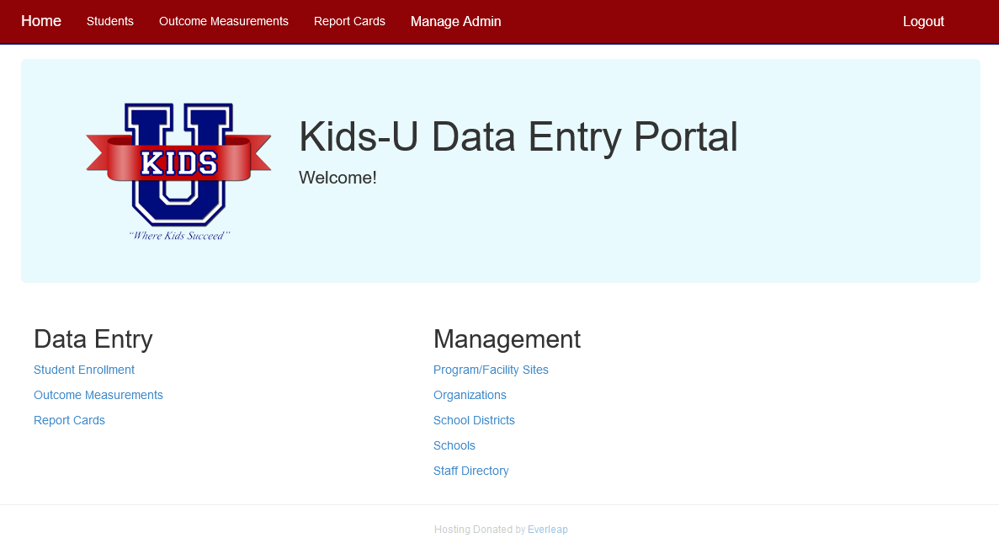
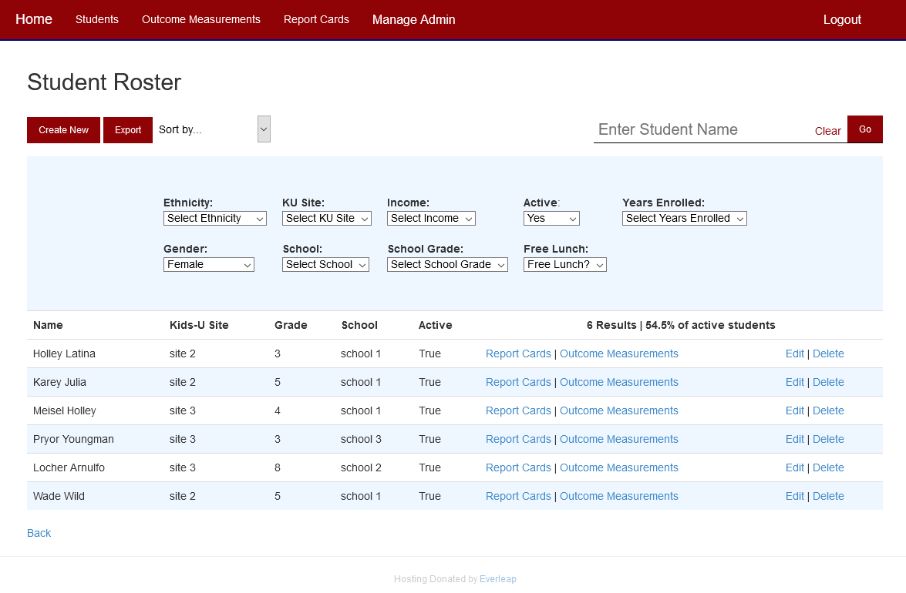
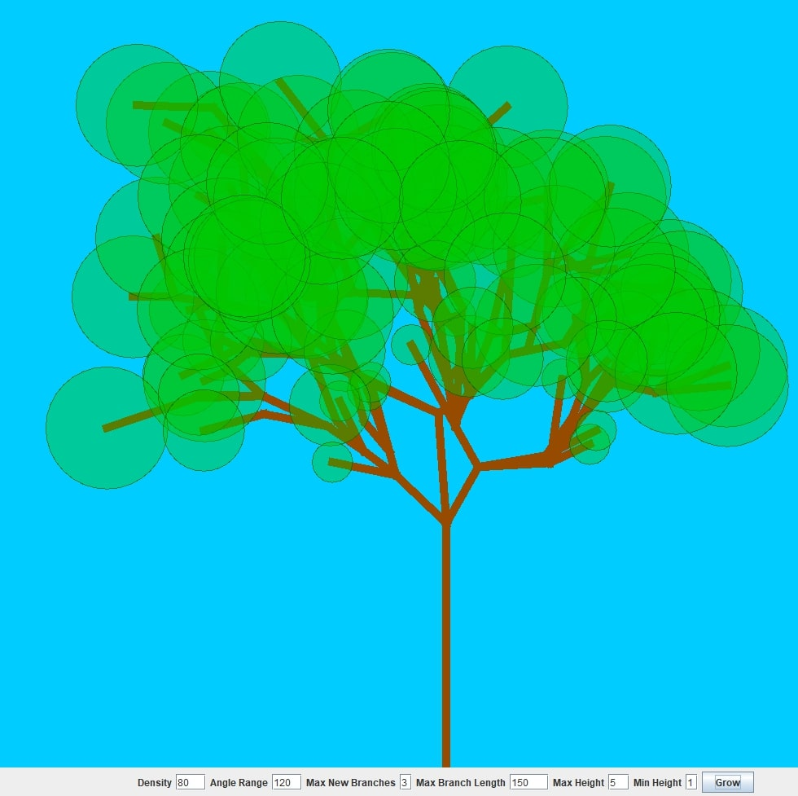
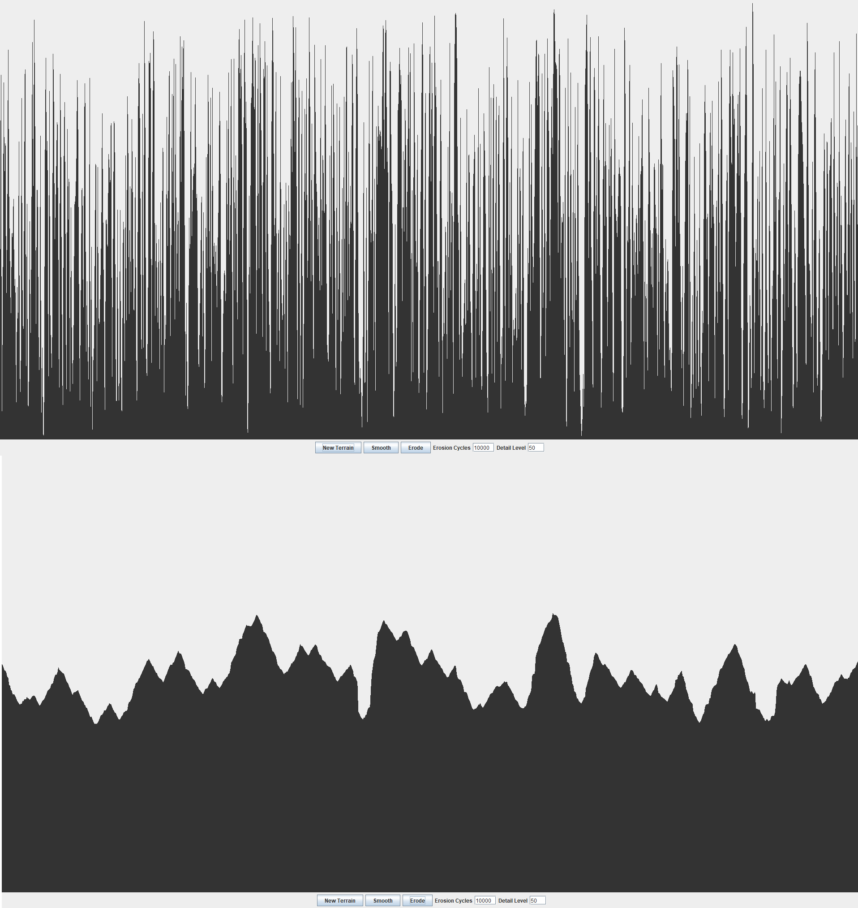

Projects
Kids-U Database Website - UTD EPICS
Github RepoI worked as Project Manager along with 4 students to create an ASP.NET website for the non-profit organization Kids-U. It was a challenging and interesting project that taught me about the MVC architecture and SQL databases along with offering lots of programming practice. Kids-U helps tutor low-income children and needed a way to organize all of their student data and grades. This project was offered by UT Dallas through the EPICS elective class where students volunteer their time to develop engineering and software solutions for non-profts.
This was the third semester of the projects' development with EPICS so when I came to the project the basic framework of the website was already made. There was still plenty of work to be done and I started by implementing the searching and sorting features. From there I created the Report Card and Outcome Measurement pages which are similar to the Student Enrollment page. A substantial portion of my time was spent on refactoring code from prior teams and making small tweaks that improve usability and security. Things like back buttons that preserve search settings and preventing IDOR vulnerabilities probably won't be noticed much but if they didn't exist it would cause problems.
This was also a great project to work on team collaboration and interacting with clients. Our team met several times with the project partner to showcase progress and ask for feedback. I got to elicit requirements and practice understanding what a customer needs in a product. On our team, I was the most comfortable with the programming work and was responsible for most of the progress during the semester. Because of this, I was able to help out my teammates who were struggling by debugging issues and brainstorming solutions.
 When Am I? - ACM Projects
Github RepoWhen Am I? is a mobile app that uses historical data pulled from the Internet to teach the user a brief history about the place they are standing. I helped create this app through ACM Projects, a semester long program where students build a project under the guidance of a project mentor. This was my first time working with a mobile app and I learned a lot about working on a team and collaborative development.
We used React Native with Firebase to create the app and I worked full stack but mainly focused on the backend. There are over 12,000 markers to view throughout all of Texas. I did a lot of work with the database to organize the data and clean out markers that had missing or incorrect data, removing about 5,000 markers. Loading lots of markers was pretty slow so I worked on optimising the query and restricting searches to only around the user. I created user profiles and got statistics from the database about the most popular tags which were then used for the user to track how many sites they visited. On the frontend, I got to work with the team to connect and display the back end query results on the map as well as the search page and user profiles.
Tree Generator
Github RepoA Java program that generates random 2D trees based on several parameters. I made this project to see if I could create random trees that look somewhat realistic and to learn basic Java graphics. The default values allow for some pretty good looking trees although there are still some that don't exactly resemble real life.
Getting the branches to connect well was the hardest part. I settled with allowing branches to be between 40 and 90 percent of the previous branch's length to stop branches from looking very lopsided. The angle of the branch is random within a range set by the user. The angle is calculated from the previous branch's angle so that they line up well.
Erosion Simulator
Github RepoA Java program that simulates erosion on a random height map in order to generate terrain. The user presses the 'Erode' button until the random points resemble mountains and valleys.
The most interesting part of this project is designing the erosion function to determine how the random points smooth together. The current method starts by choosing a random point for a water drop to remove a set amount of dirt. Then the droplet carries the dirt to a neighboring lower point, leaving dirt behind as it moves. The drop stops after it runs out of dirt or is at the bottom of a valley.
Password Manager
Github RepoThis project is a simple application to interact with a text file of login information. To protect the file from being read by anyone, users choose a password that is used to encrypt the file with. This way the file can't be read unless you know the correct password.
I decided to write this project so that I could refresh my basic C++ skills after a semester of not using them. I was also able to incorporate data structures through a binary tree storage system.
Personal Website
Github RepoThis website serves as an easy place to showcase for all my programming projects. The site itself is a project as I have used it to learn the basics of HTML, CSS, and JavaScript.
MIPS Connect 4
Video showcasing gameThis was a semester long project for my computer architecture class that was worked on by myself and two others. I wrote the majority of the MIPS assembly code to get the game working. The project taught me a lot about solving problems in an efficient manner as choosing a bad solution would lead to an excess amount of code.
The biggest challenge was choosing how to represent the position of pieces in memory. The solution I came up with was to store the game board as one long string. This decision ended up making it very simple to traverse the board for other functions of the game.
About Me
I got my master's and bachelor's in computer science at the University of Texas at Dallas. Now I am a software developer for Texas Instruments supporting a wide variety of apps and tech stacks. I enjoy learning about new technologies and discovering interesting solutions to problems. A passion for tinkering and creating my own projects makes up a large portion for why I chose computer science. Outside of programming, I try to spend my spare time being active by playing volleyball and going for bike rides.